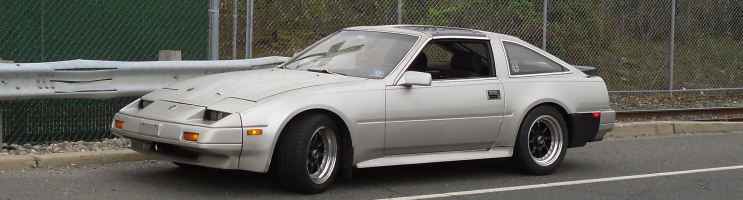

-
I'm talking about machining the U-shaped piece from the PBM kit, not building the space shuttle.
After the initial 7 hours of my design time, Its $20 worth of steel and 15 minutes of welding.
:-?"produce first.talk second." -
is there a reason to use tein rods rather than stock z33 ones? -
I imagine that OEM Z33 inners could be combined with any S13-S14 aftermarket outers providing the threads match. The lengths will be correct.
The Tein inners are considerably thicker and stronger. Ikeya are very nice as well."produce first.talk second." -
what is the difference going to the thicker ones, is it noticable? i can get stock ones from rock auto for 30$ each instead of 200+ :P i am guessing those ones from rockauto are better than my stock worn out ones. I am looking at this because i will be replacing my steering rack soon. -
it'll help prevent bending tie rods for that mad drift angle, nice write up though mike!Sbsperformance-cylinder head service and porting specialist. Shoot me a pm for porting specials and now offering a low low price for intake manifold porting! Now offering ceramic and thermal dispersant coating! -
Your not getting it. The only reason to perform this "mod" is for more strength, less bumpsteer and more steering angle (drift). Yes it costs more than stock shit.Sharpen047 wrote: what is the difference going to the thicker ones, is it noticable? i can get stock ones from rock auto for 30$ each instead of 200+ :P i am guessing those ones from rockauto are better than my stock worn out ones. I am looking at this because i will be replacing my steering rack soon.
Buying OEM inners rather than Tein might save a few dimes, but you still need good aftermarket outers ($150+) to reap the benefits."produce first.talk second." -
[quote]Mike_GruiZinga wrote:oh i seeOriginally posted by Sharpen047 i was thinking super turning radius! and as of now i dont have enough power to drift with my sticky tires because im NA and it almost never rains here in cali.
i was thinking super turning radius! and as of now i dont have enough power to drift with my sticky tires because im NA and it almost never rains here in cali.
-
[quote]Sharpen047 wrote: [quote=Mike_GruiZinga]you just have to go in super fast and initiate early!Originally posted by Sharpen047Sbsperformance-cylinder head service and porting specialist. Shoot me a pm for porting specials and now offering a low low price for intake manifold porting! Now offering ceramic and thermal dispersant coating! -
So I'm trying to start on the angle mods on my 88T, and I'm not getting anything.
I got some MFR s14 inners and moog outer tie rods. The inners have built in rack spacers. I have the passenger side on, and no extra angle. The rack stops on something internal, and it wouldn't even touch the rack housing.
That's full "lock" and neither my stock tie rod of the rack spacer/s14 tie rod bottoms out on the rack housing like my s13's and apparently mikes zenki.
Do I need a zenki or s13 steering rack for full travel?
And I'm going to mod my knuckles and decrease the ackerman a little. Hopefully in the next couple days. But I wanted to get a start on the basics with these. Guess not.
~Alexsplatter fake blood on fubar'd quarter and roll out.
pedestrians=mobile clipping points -Benedict on PurePontiackid's 280zx -
Hmm, that's odd.sigpic -
I posted a picture of how one S12 owner went about shortening his knuckles. Granted they look really short.Rustspecs13 wrote:
I'm going to mod my knuckles and decrease the ackerman a little. Hopefully in the next couple days. But I wanted to get a start on the basics with these. Guess not.
~Alex
My buddy shortened his Z31 knuckles awhile back. That in addition to some steering rack spacers added up to almost 50° of steering angle. Stock was somewhere like 30 or so.1984 Hardtop Z31NA2T: Angrily decomposing due to lack of motivation
1986 Z31NA: Dead and gone -
Can i ask a dumb question?
What would the advantage of more angle?
is it just for drifting? 1986 RB20 300xz 2+2 -
can we get this as a sticky?1984 300ZX - 1988 VG30T Engine, Trans, Diff, ECU
1987 300ZX TURBO - ( Parts Car ), 1988 300ZX TURBO - ( Parts Car )
1972 240Z -- Full restore - L28ET L6 Engine from 280zx, T-5 transmission, Rear diff from the 87
1998 Mazda B-2500, And a lot of bikes -
I've got an 89 z31 turbo and running s14 LCA, hubs, knuckles and stance coilovers.
Yet to put the front together, but am looking for inner & outer tierod ends that will allow my z31 rack to connect with s14 knuckles.
I read that tein 350z inners only connect with tein outers?
If I go 350z inners are they the same thread as z31 rack? i assume I can then go s14 adjustable outers as a direct bolt onto 350z inners?.. and no weakness/safety issues using adjustable ends?
Also I'm not sure what thread the z31 runs m16x1.5 or m16x1mm ?
Should I chose to shorten the s14 LCA's in the future, I assume there's enough adjustment in the tie rod ends to wind them back as well?
references;
http://www.ziptied.com/forums/index.php?topic=39378.0
http://www.zdriver.com.au/index.php/…s15/#entry1986
http://www.zdriver.com.au/index.php/…-gtrz15-build/
Thanks,
PaulLove z31's as much as I do? Check out my build: http://www.zdriver.com.au/index.php/…__80#entry2219 -
Inner to rack is M16x1.0
Outer to inner is M14x1.5
Did you even mockup any of this to see if you want to continue exploring this road?

Copyright © 2006–. All rights reserved. Privacy Policy